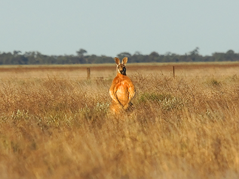

Wonders of Australia
No visit to Australia is complete without exploring the magnificent sights and natural wonders on offer. Australia is truly unique with breathtakingly beautiful beaches, sandy deserts and stunning tropical rain forests. Did you know Australia is also the driest inhabited continent of the world and is the only country in the world that covers an entire continent? It is one of the largest countries on Earth.
Australia is divided into six states: South Australia, Western Australia, New South Wales, Queensland, Victoria and Tasmania, and two self-governing territories: the Northern Territory and the Australian Capital Territory. The biggest cities in Australia are Sydney, Melbourne, Perth, Brisbane and Adelaide and are all located at the coast or close to the coast.

“Kangaroo Island kangaroos (Macropus fuliginosus)” by Peter and is licensed under CC BY 2.0
Due to Australia's remote location, there are many animal species that occur here and nowhere else in the world, such as the platypus, kangaroo, echidna, and koala.